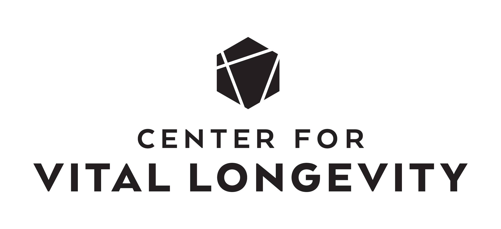
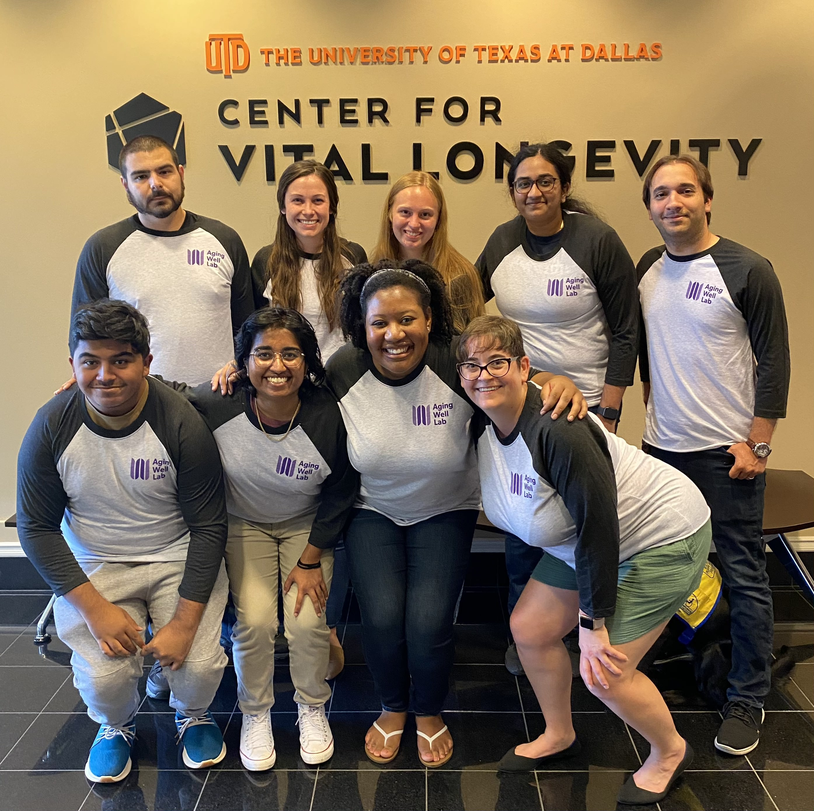

Aging Well Lab Manual
2022-02-25
Chapter 1 Introduction
Welcome to the Aging Well Lab manual! This manual was created by the Lab Director, Kendra Seaman, to convey my vision for our lab and to communicate community expectations. This manual will be updated regularly as our lab grows and develops. If you have any comments or suggestions regarding the content of this manual, please share these with me. This is a living document and will change as needed.
Since we are a relatively new lab, this manual was inspired by (and in some places directly copied from) other lab manuals, including MemoLab Manual, Peele Lab Manual, and Smith Lab Manual. Thanks to everyone who has shared their resources!
This lab manual was created in R Studio using the bookdown package.
1.1 About the Lab
Our research is dedicated to using basic and translational scientific research to promote health and wellbeing across adulthood. We use a variety of behavioral, modeling and neuroimaging techniques to better understand how the mind and the brain change as people get older.
Address:
Aging Well Laboratory
Center for Vital Longevity
1600 Viceroy Drive, Suite 800
Dallas, TX 75235
(972) 883-3730

1.2 Lab Info
The lab has several public-facing accounts that anyone can access:
- Website: https://vitallongevity.utdallas.edu/seamanlab/
- GitHub: https://github.com/agingwelllab
- OSF: https://osf.io/26jqs/
The lab also has sites that are only accessible to lab members:
- CVL Lab Wiki: https://cvlwiki.utdallas.edu/doku.php?id=seamanlab:home
- Asana: https://app.asana.com
- Slack: https://agingwelllab.slack.com
